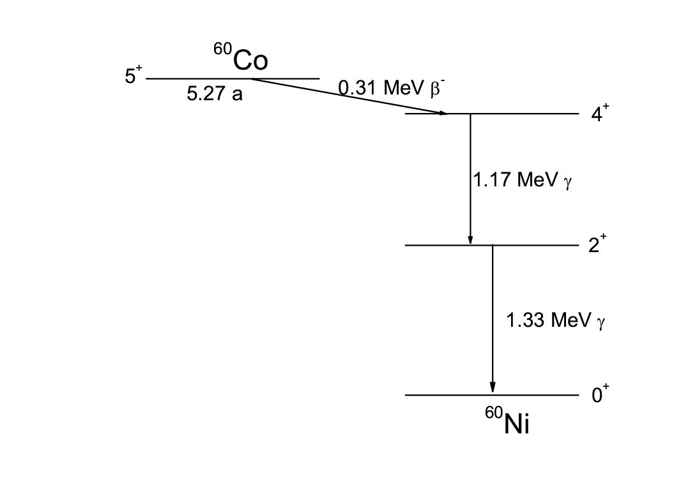

| Atom Notation |
\[ \Large X^A_Z\]
X = element A = Mass Number Z = Atomic Number |
||||||||||||||||||||||||||||||||||||||||||
| Valance Electron |
= outermost shell max 8 × e- |
||||||||||||||||||||||||||||||||||||||||||
| Type of Nuclear Change |
|
||||||||||||||||||||||||||||||||||||||||||
| Activity (A) |
= rate of decay = disintegration per unit time \[ A={dN \over dt} = -\lambda~N \] * disintegration not necessarily lead to radiation emission
Apparent Activity
Using \( \dot{\chi} = \frac{ A\Gamma }{d^{~2}} \), we have
\[ A_{apparent} = \frac{ \dot{K_{air}}~d^2 }{\Gamma_{AKR}} \]
where
\(\dot{K}\) = air kerma rate
d = calibration distance ΓAKR = air kerma rate constant Cumulated Activity Specific Activity
Activity per mass (Bq mg-1)
A radionuclide may contain stable isotope ( = carrier ) |
||||||||||||||||||||||||||||||||||||||||||
| Decay Equation |
\[ {{dN}\over{dt}} = {-\lambda~N} \]
where
N = number of atom
Solution:
\( N=N_0~e^{-\lambda~t} \)
\( A=A_0~e^{-\lambda~t} \) if plug in \(A=-\lambda~N\) Decay Factor
= \(e^{-\lambda~t}\)
|
||||||||||||||||||||||||||||||||||||||||||
| Half Life |
\[ T_{1/2} = { ln(2) \over \lambda } \]
where
λ = Decay Constant
Effective Decay Constant \[ \lambda_{eff} = \lambda_{phy} + \lambda_{bio} \]
i.e.
Physical Half Life \( \bf T_{1/2, phy}\)
= time to halve radioactivity Biological Half Life \( \bf T_{1/2, bio}\) = time to halve the amount of substance from the target organ |
||||||||||||||||||||||||||||||||||||||||||
| Mean Life (τ) [1] |
The total number of decay counting from t=0 for a source with A0 = Area Under Decay Curve $$ \begin{align} Total~\#~of~decay &= \int A~dt \\ &=\int^\infty_0 { A_0 e^{-\lambda t} } dt \\ &=\left[ { -\frac{1}{\lambda} A_0 e^{-\lambda t} } \right]^\infty_0 \\ &= 0-\left( { -\frac{1}{\lambda}A_0 } \right) \\ N_{total}&= \frac{A_0}{\lambda} \\ &=A_0 \tau \end{align} $$
where
τ = mean life
\[ \tau = {1 \over \lambda } = {T_{1/2} \over ln(2)}\]
|
||||||||||||||||||||||||||||||||||||||||||
| Metastability |
Atom State
|
||||||||||||||||||||||||||||||||||||||||||
| Radioactive Equilibrium |
Bateman Equation
= model the activity of parent and daughter nuclides as function of time
Daughter Activity < Daughter production rate < Parent decay rate < Daughter decay rate \[ N_2(t) = N_1(0) \frac{\lambda_1}{\lambda_2 - \lambda_1} \left( e^{-\lambda_2 t} - e^{-\lambda_1 t} \right) + N_2(0)e^{-\lambda_2 t} \]
where
subscript 1 = Parent
subscript 2 = Daughter Equilibrium
The ratio of λparent and λdaughter defines the type of equilibrium of the composite:
|
||||||||||||||||||||||||||||||||||||||||||
| Source of Ionising Radiation |
|
||||||||||||||||||||||||||||||||||||||||||
| Electron Configuration |
Maximum e- a shell can accommodate = 2 n2 |
||||||||||||||||||||||||||||||||||||||||||
| Decay Scheme |  | ||||||||||||||||||||||||||||||||||||||||||
| Nuclide Chart | (graph) proton N vs neutron N | ||||||||||||||||||||||||||||||||||||||||||
| Mass Defect |
mc2 = nuclear binding energy mbound p + mbound n +
mdefect = mfree p + mfree n The binding energy can be obtained through nuclear fission or fusion |
||||||||||||||||||||||||||||||||||||||||||